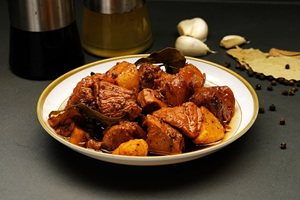
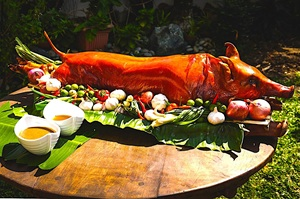

Filipino cuisine is a flavorful blend of indigenous, Spanish, Chinese, and American influences. Popular dishes include adobo, sinigang, and lechon. These dishes reflect the diverse tastes and traditions found throughout the islands.

Figure 1: Classic Chicken Adobo, a Filipino favorite. Credits to Joy D. Ganaden

Figure 2: Lechon, roasted pig, a festive delicacy. Credits to generals-lechon.com.